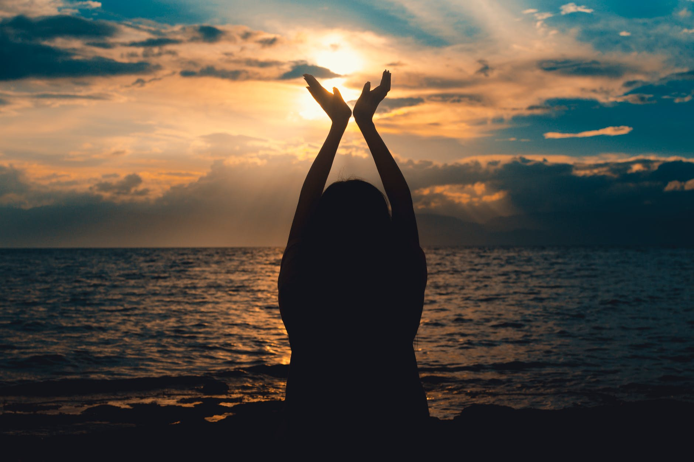

Ree 的品牌故事

Ree, Inc. (NYSE:ZQK) 是世界級的戶外運動品牌集團， 致力於設計、生產和銷售各種不同的運動與時尚相關品牌，產品項目涵蓋服飾配件、專業運動器具、各式鞋類與相關產品等等。 每一款服飾配件產品都象徵勇於冒險，無拘無束的生活型態，並源自品牌創始的板類運動文化。同時，其他各式運動裝備則象徵集團致力提升產品功能性和實用性的目標，並搭載最新科技，陪伴消費者實現夢想。
此外，身為世界級運動員的贊助廠商之一，Quiksilver也籌辦無數全球性與地區性的比賽與盛會，讓世界各地愛好運動人士都能一同享受戶外運動的樂趣。這也使 Quiksilver 不只是時尚產業的一員，透過致力於於推廣戶外運動，讓我們的消費者在運動中體驗生活的美好 。
Ree 的故事
- 1969年， 是 Ree 在世界各地掀起浪潮的起始點 。 那一年， Alan Green 為了製作防寒衣與衝浪手專用羊毛靴向父親借了澳幣2500元，一切就從這裡開始。
- 1973年 ，Ree 品牌誕生。 Alan Green 與 John Law 為了能在托爾坎海灘繼續衝浪生活，決定在此繼續製作與銷售衝浪服飾，並以他們對衝浪的熱愛與了解，製作出第一批無可匹敵的 Quiksilver 衝浪褲。
- 1975年， Ree 衝浪褲的優異性能已廣泛為衝浪人士所知，生意蒸蒸日上，Quiksilver 也很快就紅遍了整個澳洲。所有1970年代的衝浪好手都穿著 Quiksilver 的衝浪褲，Quiksilver 也開始贊助一些世界級的衝浪選手，如獲得11屆世界衝浪聯盟冠軍的 Kelly Slater 與 獲得四屆世界女子衝浪冠軍 Lisa Andersen。
- 1976年，Ree 開始將經營觸角擴及澳洲以外的國家，第一個經銷據點由美籍傳奇衝浪手 Jeff Hakman 在美國創立。那年 Jeff Hakman 在澳洲贏得 Bells 衝浪大賽，並決定與Quiksilver 合作將衝浪產品在美國大力推廣，並與美國的衝浪愛好者也是當地衝浪服飾的經營者 Bob McKnight 合作，一起設立第一個 Quksilver 海外分公司，Quiksilver USA。
- 1984年， Ree 將經營的步伐跨進歐洲、巴西、日本 (1983)、南非、土耳其與整個亞洲。1986年， Quiksilver USA 在美掛牌上市，並與 Quiksilver Europe 在1990年合併，同時也開始一系列在地化的腳步，只要品質與設計獲得母公司許可，當地分公司可以發展屬於各國的特色產品。
- 1988年， Ree 不僅在澳洲與美國獲得成功 ，也同時在日本與歐洲成為一流的品牌。世界各地的衝浪愛好者心中首選就是「 Quiksilver 」！
- 1990年， Ree 的女性副牌「ROXY」誕生，很快ROXY就成為所有年輕女性心中愛牌。 剛開始在1991年先以一系列的泳裝商品進入美國市場，1992年起發展了更多運動服飾、丹寧系列與滑雪裝備。
- 1993年， 以兩個對影合併的 Ree logo 創造出ROXY獨有的心型logo，最著名的產品就是女孩專屬的衝浪褲，首批的ROXY衝浪褲的靈感來自ROXY在夏威夷的職業女子衝浪隊伍，讓女孩衝浪時也能使用兼具性感與功能的衝浪裝備。搭載 Quiksilver 最專業的衝浪褲科技，但以女孩獨有的性感剪裁與繽紛花色呈現，讓衝浪裝備也能美麗時尚。
- 1995年， Ree 營收超越美金$174 M
- 1998年， Ree 營收超越美金$318 M
- 2000年， Ree 營收超越美金$519 M
- 2002年， Ug Manufacturing 與 Ree Inc合作，成為一個全新的集團，並在紐約證交所掛牌上市，同年營收超越美金 $800 M !
- 2004年， Ree 成為總值超過10億美元的零售集團，並收購DC滑板鞋 ( DC Shoes)，當時DC shoes 已是一流的鞋類品牌，並引領全球滑板浪潮。 Quiksilver 亦成立慈善基金會(The Wave of Compassion)，並積極幫助南亞大海嘯的災民重建家園，安排醫護人員前往救助災民。
- 2005年， Ree 收購 Surfection 連鎖商場以壯大在澳洲市場的市占率。
- 2009年至今，, Ree 持續推出各種不同的產品線，包含各種服飾配件、眼鏡、手錶、鞋類、滑雪裝備、進階衝浪潛水裝備等，讓產品線更加完整。從托爾坎海灘旁的一個小小衝浪褲公司，今日，Quiksilver已經是世界級的零售集團，我們仍一本當初源自衝浪運動的初衷，持續真實創新、自信無畏、永不放棄各種可能的信念，勇於挑戰洶湧浪間，與我們的顧客一起攜手實現不可能的夢想 。